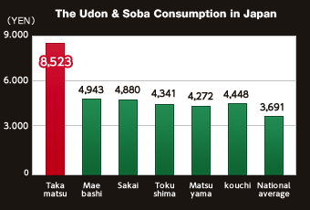

According to the Ministry of Internal affairs and communications in 2010, Takamatsu city in Kagawa was #1 in Udon consumption, and also in flour for Udon purposes. These values express the love that the Udon people have for their noodles. In terms of the number of stores, it is said that there are more Udon stores than telephone poles. From times past, Udon has been an integral part of their culture and life.